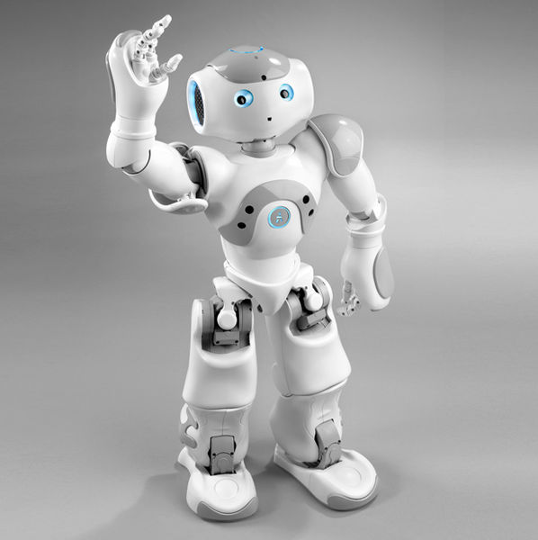
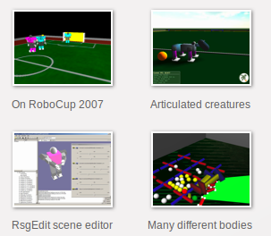
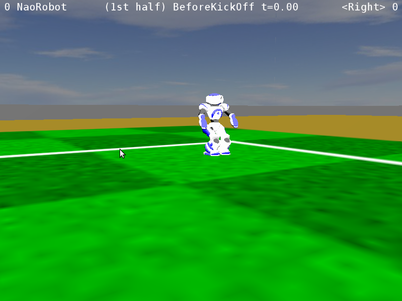
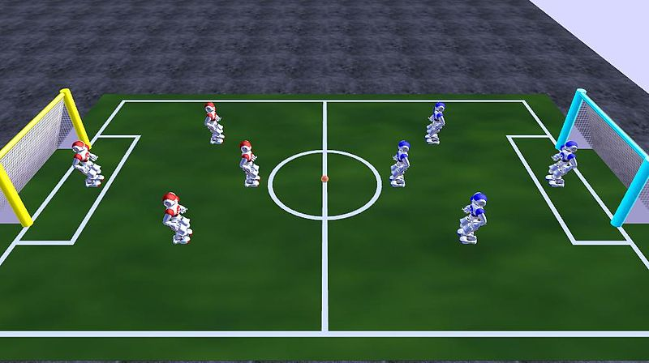

روبوکاپ
شبیهسازی فوتبال
درس هوش مصنوعی دانشگاه پیام نور تهران شمال
استاد سپهری
تهیهکننده: سعید علیجانی
۱۳۹۴/۱/۲۳
wiki.lfkf.org
saeedalijani.blog.ir
فهرست مطالب:
*روبوکاپ چیست ؟
*شبیهسازی دوبعدی فوتبال
*شبیهسازی سهبعدی فوتبال

روبوکاپ چیست؟
روبوکاپ (RoboCup) عنوان مسابقاتی بینالمللی در زمینه دانش رباتیک و هوش مصنوعی است.
سالیانه توسط فدراسیون بینالمللی RoboCup برگزار میشود.
نام RoboCup برگرفته از کلمات «Robot Soccer» (مسابقه فوتبال) و «World Cup» (جام جهانی) است.
هدف مسابقات روبوکاپ
هدف نمادین: پیروزی تیم فوتبال رباتهای انساننما در سال ۲۰۵۰ در رقابت با برترین تیم فوتبال انسانها
هدف اصلی: توسعهٔ دانش رباتیک و هوش مصنوعی
لیگهای روبوکاپ:
*لیگهای فوتبال
*لیگهای امداد و نجات
*رباتهای خانگی
*لیگهای دانشآموزی
رقابتهای فوتبال
*رقابت فوتبال رباتهای واقعی
*لیگهای شبیهسازی
*شبیهسازی دوبعدی فوتبال
*شبیهسازی سهبعدی فوتبال
شبیهسازی دوبعدی فوتبال
*شبیهسازی رباتها به وسیلهٔ برنامههای کامپیوتری
*هر ربات برای خودش تصمیم میگیرد
*محیط شبیهسازی داری دو بعد x و y است
*هدف: یاگیری و هوشمندی در بازی فوتبال
برنامهٔ شبیهسازی
برنامهٔ «rcssserver»
*نرمافزار آزاد
*نوشتهشده به زبان سیپلاسپلاس
*تحت شبکه
*برنامهٔ شبیهساز: سرور
*برنامهٔ رباتها: کلاینت
تصویری از شبیهسازی دوبعدی فوتبال

شبییهسازی سهبعدی فوتبال
*شبیهسازی رباتها به وسیلهٔ برنامههای کامپیوتری
*شبیهسازی گرافیکی و سهبعدی به وسیلهٔ openGL
*هر ربات برای خودش تصمیم میگیرد
*محیط شبیهسازی داری سه بعد x و y و z است
*هدف: یاگیری و هوشمندی در بازی فوتبال
ربات شبیهسازیشده
ربات نائو

برنامهٔ شبیهسازی
برنامهٔ «rcssserver3d»
*استفاده از برنامهای به نام SimSpark
*تحت شبکه
*برنامهٔ شبیهساز: سرور
*برنامهٔ رباتها: کلاینت
برنامهٔ SimSpark
*نرمافزار آزاد
*شبیهسازی چندعامله
*شبیهسازی فیزیکی برای هوش مصنوعی و رباتیک
*نوشتهشده به زبانهای سیپلاسپلاس و روبی
تصاویری از برنامهٔ SimSpark

تصویری از محیط شبیهسازی سهبعدی فوتبال

تصویری از محیط شبیهسازی سهبعدی فوتبال

ویژگیها
*شبیهسازی محیطهای واقعی (رعایت قوانین فیزیکی)
*شبیهسازی رباتهای واقعی
*اجرای سریعتر و راحتتر ایدهها
*کمک به پیشرفت دانش هوش مصنوعی و رباتیک
*تفریح!!!!
بخش پایانی
اجرای برنامهٔ شبیهساز فوتبال